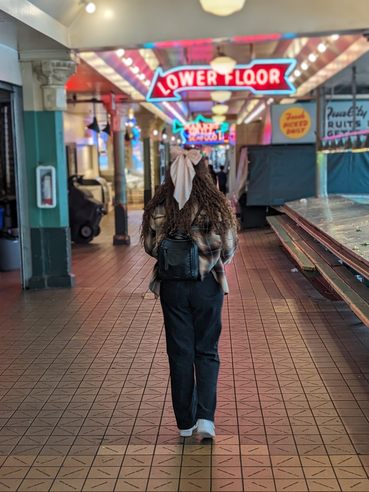

About Me
My name is Lusanda Hlophe. One of these days I would be proud to say that I am a software engineer. We have all used or have seen software and thought this is a very badly designed application. I want to be the person that can fix that. I want to be the person who ensures that websites are accessible to people who have learning disabilities such as myself because one of the most frustrating things when browsing the web is finding a web page that has the information that you need but you cannot read it because you’re dyslexic. I want people who struggle to not have to copy and paste things for them to understand it. I believe that I can play a role in ensuring accessibility for everyone.
My interest came when I had an idea to make a game. I tried to convince my husband, who is a software engineer, to help me build it but he suggested that I could try and learn how to build it myself. Then I went down a rabbit hole trying to learn myself but I eventually hit a roadblock. I needed someone professional to teach me. That’s how I ended up going to North Seattle College. Right now, I’m learning HTML/CSS/JavaScript.
I’m already somewhat familiar with CSS and HTML and my JavaScript knowledge is very minimal. I learned how to print to the console, and how to get objects from the document. I changed colors and pictures on a website template.
After graduation I want to work in software. You can view my portfolio of work done so far in school here: My repo. On my repo you will find web pages where I only change the pictures and colors.
Right now, I’m trying hard to keep up with my schoolwork load. It is a full-time job which leaves me with very little free time. When I do have some free time, my husband teaches me how to code. Since there is not much time available, those lessons are short.